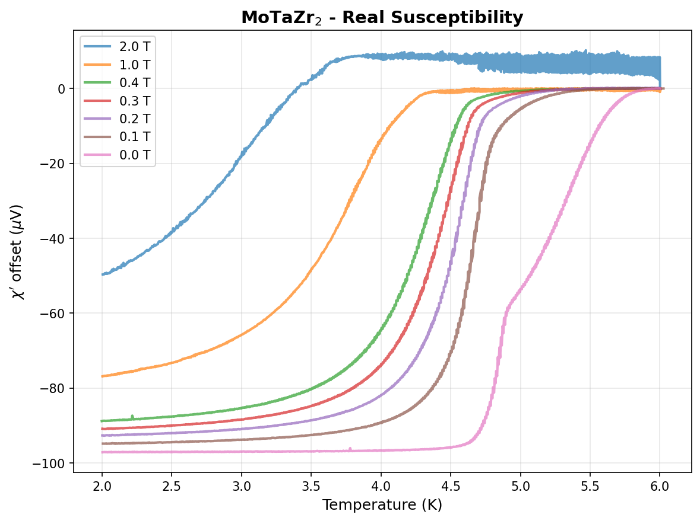
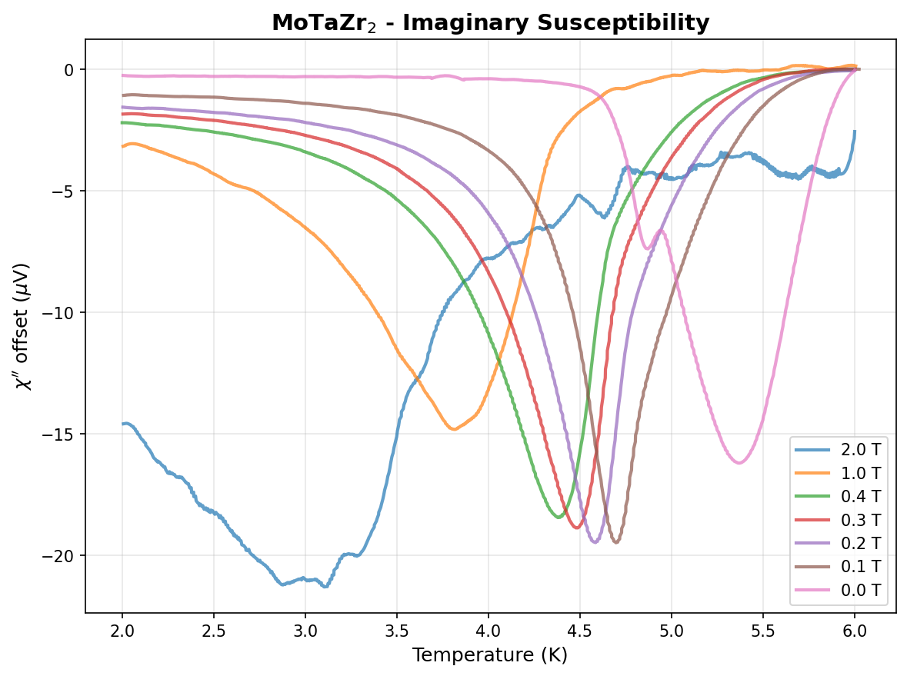
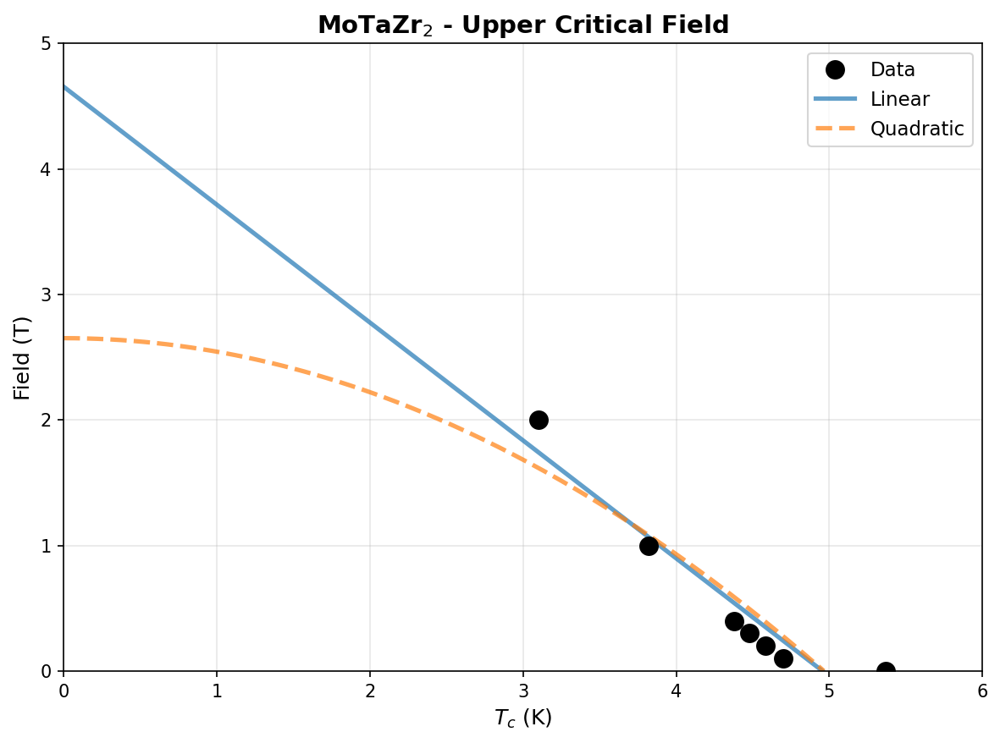
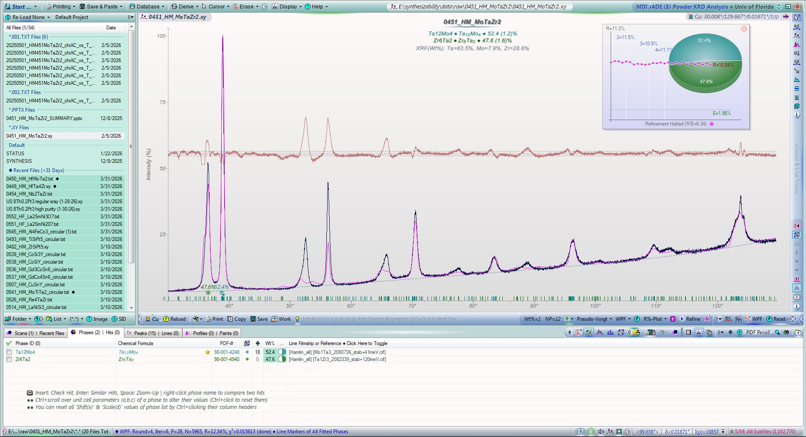
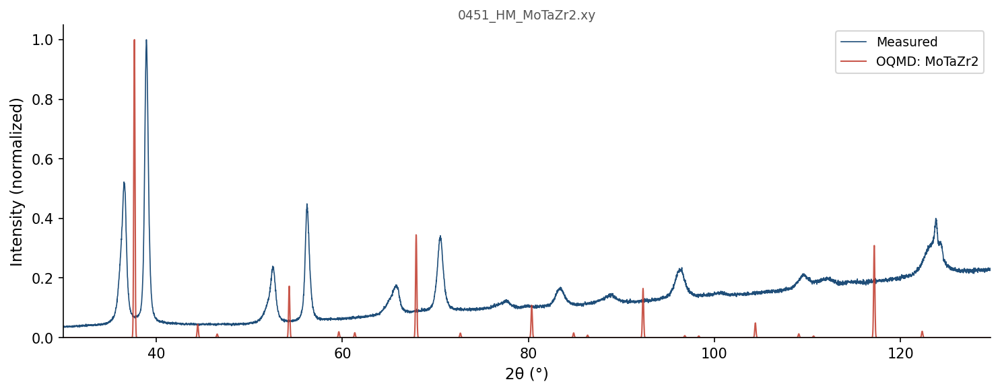
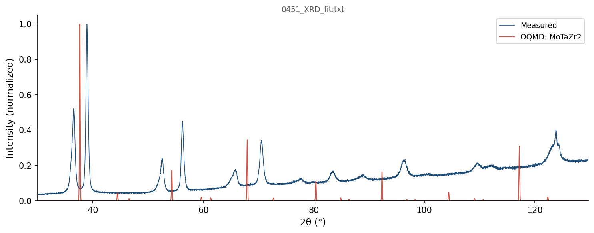

| Element | Expected (mol frac) | Measured (mol frac) | Δ (mol frac) | Δ (%) |
|---|---|---|---|---|
| Mo | 0.2500 | 0.2496 | -0.0004 | -0.04% |
| Ta | 0.2500 | 0.2501 | +0.0001 | +0.01% |
| Zr | 0.5000 | 0.5002 | +0.0002 | +0.02% |
353 OQMD entries in the Mo-Ta-Zr element system (12 on hull, 37 ICSD-tagged). OQMD: negative = below hull (stable). Sorted most stable first.
| Composition | Stability (meV/atom) | ΔE (meV/atom) | ICSD | Space | Entry | CIF |
|---|---|---|---|---|---|---|
Mo2Zr1 |
-126 | -137.9 | Mo-Zr | 1592091 | CIF | |
Mo1Ta1 |
-19 | -194.4 | ✓ | Mo-Ta | 2036487 | CIF |
Mo2Ta1 |
-19 | -172.7 | Mo-Ta | 1975029 | CIF | |
Mo3Ta1Zr2 |
-5 | -139.1 | Mo-Ta-Zr | 2145257 | CIF | |
Mo1Ta4 |
-3 | -92.5 | Mo-Ta | 2131555 | CIF | |
Mo7Ta1 |
-1 | -65.9 | Mo-Ta | 1916311 | CIF | |
Mo3Ta5 |
-1 | -163.1 | Mo-Ta | 1975082 | CIF | |
Mo4Ta7 |
-1 | -159.1 | Mo-Ta | 2131870 | CIF | |
Mo3Ta8 |
+0 | -122.4 | Mo-Ta | 2131873 | CIF | |
Mo1 |
+0 | 0.0 | Mo | 1215167 | CIF | |
Ta1 |
+0 | 0.0 | Ta | 1215197 | CIF | |
Zr1 |
+0 | -0.2 | Zr | 1791927 | CIF | |
Mo1Ta1 |
+0 | -194.4 | Mo-Ta | 1522226 | CIF | |
Mo1Ta1 |
+0 | -194.4 | Mo-Ta | 306083 | CIF | |
Ta1 |
+0 | 0.1 | Ta | 2162725 | CIF | |
Ta1 |
+0 | 0.1 | Ta | 2162668 | CIF | |
Mo1Ta1 |
+0 | -194.3 | Mo-Ta | 1990193 | CIF | |
Ta1 |
+0 | 0.1 | Ta | 1522225 | CIF | |
Mo1 |
+0 | 0.1 | Mo | 1522085 | CIF | |
Mo1 |
+0 | 0.1 | Mo | 1522090 | CIF | |
Mo7Ta1 |
+0 | -65.8 | Mo-Ta | 2132163 | CIF | |
Zr1 |
+0 | 0.0 | ✓ | Zr | 67408 | CIF |
Mo2Zr1 |
+0 | -137.7 | ✓ | Mo-Zr | 17718 | CIF |
Zr1 |
+0 | 0.1 | Zr | 758445 | CIF | |
Zr1 |
+0 | 0.1 | Zr | 758455 | CIF | |
Mo1 |
+0 | 0.3 | ✓ | Mo | 676469 | CIF |
Ta1 |
+0 | 0.3 | ✓ | Ta | 676531 | CIF |
Zr1 |
+0 | 0.2 | ✓ | Zr | 8196 | CIF |
Zr1 |
+0 | 0.2 | Zr | 1215390 | CIF | |
Zr1 |
+0 | 0.2 | Zr | 758475 | CIF | |
Zr1 |
+0 | 0.2 | Zr | 758462 | CIF | |
Zr1 |
+0 | 0.2 | Zr | 758464 | CIF | |
Zr1 |
+0 | 0.3 | Zr | 758463 | CIF | |
Zr1 |
+0 | 0.3 | Zr | 758466 | CIF | |
Zr1 |
+0 | 0.3 | Zr | 758474 | CIF | |
Zr1 |
+0 | 0.3 | Zr | 758457 | CIF | |
Zr1 |
+1 | 0.3 | ✓ | Zr | 117515 | CIF |
Zr1 |
+1 | 0.3 | ✓ | Zr | 2030147 | CIF |
Zr1 |
+1 | 0.4 | Zr | 758448 | CIF | |
Zr1 |
+1 | 0.4 | Zr | 758450 | CIF | |
Zr1 |
+1 | 0.4 | Zr | 758465 | CIF | |
Zr1 |
+1 | 0.4 | Zr | 758449 | CIF | |
Zr1 |
+1 | 0.4 | Zr | 758470 | CIF | |
Zr1 |
+1 | 0.4 | Zr | 758456 | CIF | |
Zr1 |
+1 | 0.4 | Zr | 758453 | CIF | |
Zr1 |
+1 | 0.5 | Zr | 758472 | CIF | |
Zr1 |
+1 | 0.5 | Zr | 758461 | CIF | |
Zr1 |
+1 | 0.5 | Zr | 758471 | CIF | |
Zr1 |
+1 | 0.5 | Zr | 758458 | CIF | |
Zr1 |
+1 | 0.5 | Zr | 758451 | CIF | |
Zr1 |
+1 | 0.5 | Zr | 758454 | CIF | |
Zr1 |
+1 | 0.5 | Zr | 758460 | CIF | |
Zr1 |
+1 | 0.5 | Zr | 758473 | CIF | |
Zr1 |
+1 | 0.5 | Zr | 758452 | CIF | |
Zr1 |
+1 | 0.5 | Zr | 758446 | CIF | |
Zr1 |
+1 | 0.5 | Zr | 758444 | CIF | |
Zr1 |
+1 | 0.6 | Zr | 758459 | CIF | |
Zr1 |
+1 | 0.6 | Zr | 758447 | CIF | |
Zr1 |
+1 | 0.6 | Zr | 1926822 | CIF | |
Zr1 |
+1 | 1.0 | ✓ | Zr | 2031515 | CIF |
Zr1 |
+1 | 1.3 | Zr | 1801137 | CIF | |
Ta1 |
+2 | 2.3 | ✓ | Ta | 670903 | CIF |
Ta1 |
+3 | 2.6 | ✓ | Ta | 16591 | CIF |
Ta1 |
+3 | 2.7 | ✓ | Ta | 9754 | CIF |
Ta1 |
+3 | 2.7 | Ta | 1515748 | CIF | |
Ta1 |
+3 | 2.7 | ✓ | Ta | 9755 | CIF |
Zr1 |
+3 | 2.9 | Zr | 1215301 | CIF | |
Mo8Ta3 |
+4 | -137.7 | Mo-Ta | 2160124 | CIF | |
Mo3Ta1 |
+4 | -125.6 | Mo-Ta | 1375091 | CIF | |
Mo9Ta7 |
+4 | -181.9 | Mo-Ta | 2132120 | CIF | |
Mo2Zr1 |
+9 | -129.3 | Mo-Zr | 1610089 | CIF | |
Mo3Ta1 |
+11 | -118.6 | ✓ | Mo-Ta | 2036490 | CIF |
Mo3Ta1 |
+11 | -118.5 | Mo-Ta | 1916187 | CIF | |
Mo3Ta1 |
+13 | -117.3 | Mo-Ta | 311317 | CIF | |
Mo7Ta3 |
+14 | -142.0 | Mo-Ta | 2131829 | CIF | |
Mo1Ta1 |
+14 | -180.8 | Mo-Ta | 337625 | CIF | |
Mo3Ta1 |
+19 | -110.9 | Mo-Ta | 2121074 | CIF | |
Mo3Ta1 |
+19 | -110.9 | Mo-Ta | 2080600 | CIF | |
Zr1 |
+20 | 19.5 | Zr | 758468 | CIF | |
Mo2Zr1 |
+24 | -114.3 | ✓ | Mo-Zr | 2033988 | CIF |
Mo2Zr1 |
+24 | -114.2 | Mo-Zr | 1609999 | CIF | |
Zr1 |
+26 | 26.2 | Zr | 1216106 | CIF | |
Mo3Ta1 |
+28 | -102.1 | Mo-Ta | 2082451 | CIF | |
Mo3Ta1 |
+28 | -102.1 | Mo-Ta | 2082334 | CIF | |
Mo3Ta1 |
+29 | -101.1 | Mo-Ta | 2121462 | CIF | |
Mo3Ta1 |
+29 | -101.1 | Mo-Ta | 2086140 | CIF | |
Ta1 |
+31 | 31.4 | ✓ | Ta | 2030257 | CIF |
Ta1 |
+32 | 31.6 | Ta | 1280388 | CIF | |
Ta1 |
+32 | 31.6 | Ta | 1215019 | CIF | |
Ta2Zr1 |
+35 | 35.0 | Ta-Zr | 1610001 | CIF | |
Mo1Ta3 |
+39 | -73.9 | Mo-Ta | 2086004 | CIF | |
Mo1Ta3 |
+39 | -73.9 | Mo-Ta | 2121371 | CIF | |
Zr1 |
+40 | 39.7 | ✓ | Zr | 7509 | CIF |
Zr1 |
+40 | 39.7 | Zr | 1214589 | CIF | |
Mo1Ta3 |
+41 | -72.5 | Mo-Ta | 2080736 | CIF | |
Zr1 |
+43 | 42.4 | Zr | 1215747 | CIF | |
Mo1Ta3 |
+43 | -69.7 | Mo-Ta | 2082301 | CIF | |
Mo1Ta3 |
+43 | -69.7 | Mo-Ta | 2082484 | CIF | |
Mo1Ta3 |
+44 | -68.7 | ✓ | Mo-Ta | 2036488 | CIF |
Mo1Ta3 |
+45 | -68.2 | Mo-Ta | 314119 | CIF | |
Zr1 |
+48 | 48.2 | Zr | 1215480 | CIF | |
Ta2Zr1 |
+51 | 51.1 | Ta-Zr | 1610091 | CIF | |
Zr1 |
+56 | 56.0 | Zr | 1215836 | CIF | |
Zr1 |
+56 | 56.0 | Zr | 1214678 | CIF | |
Mo1Ta1 |
+60 | -133.9 | Mo-Ta | 2080472 | CIF | |
Mo1Ta1 |
+71 | -123.1 | Mo-Ta | 2082184 | CIF | |
Mo1Ta1 |
+71 | -123.1 | Mo-Ta | 2082151 | CIF | |
Ta2Zr1 |
+72 | 71.5 | Ta-Zr | 1576973 | CIF | |
Mo1Ta1 |
+79 | -115.6 | Mo-Ta | 2085868 | CIF | |
Mo1Ta1 |
+79 | -115.6 | Mo-Ta | 2121541 | CIF | |
Zr1 |
+80 | 79.6 | ✓ | Zr | 9320 | CIF |
Zr1 |
+80 | 79.9 | Zr | 1215212 | CIF | |
Zr1 |
+81 | 80.3 | Zr | 1215925 | CIF | |
Mo1Zr2 |
+85 | 16.2 | Mo-Zr | 1450038 | CIF | |
Ta3Zr1 |
+88 | 87.5 | Ta-Zr | 2121483 | CIF | |
Ta3Zr1 |
+88 | 87.5 | Ta-Zr | 2086174 | CIF | |
Mo1Zr2 |
+88 | 18.6 | Mo-Zr | 757256 | CIF | |
Mo1Zr2 |
+88 | 18.6 | Mo-Zr | 757245 | CIF | |
Ta1 |
+88 | 88.2 | Ta | 1577325 | CIF | |
Ta1 |
+88 | 88.3 | Ta | 1214841 | CIF | |
Ta1Zr3 |
+89 | 88.8 | Ta-Zr | 2080587 | CIF | |
Ta1Zr3 |
+89 | 88.9 | Ta-Zr | 2121071 | CIF | |
Mo3Zr1 |
+90 | -13.0 | Mo-Zr | 1793440 | CIF | |
Zr1 |
+91 | 90.8 | Zr | 1214945 | CIF | |
Ta3Zr1 |
+91 | 91.0 | Ta-Zr | 2080723 | CIF | |
Mo1Zr3 |
+93 | 40.8 | Mo-Zr | 2121373 | CIF | |
Mo1Zr3 |
+94 | 42.5 | Mo-Zr | 2080641 | CIF | |
Mo1Zr3 |
+94 | 42.6 | Mo-Zr | 2086008 | CIF | |
Mo1 |
+95 | 94.5 | Mo | 1280332 | CIF | |
Mo1 |
+95 | 94.5 | Mo | 1214989 | CIF | |
Ta1Zr1 |
+95 | 95.0 | Ta-Zr | 758010 | CIF | |
Ta1Zr1 |
+95 | 95.0 | Ta-Zr | 2082189 | CIF | |
Ta1Zr5 |
+96 | 96.0 | Ta-Zr | 758012 | CIF | |
Ta2Zr1 |
+96 | 96.3 | Ta-Zr | 1520706 | CIF | |
Ta1Zr1 |
+97 | 97.2 | Ta-Zr | 2084845 | CIF | |
Ta3Zr1 |
+100 | 100.4 | Ta-Zr | 2082489 | CIF | |
Ta1 |
+100 | 100.5 | Ta | 1485545 | CIF | |
Ta1Zr3 |
+102 | 102.1 | Ta-Zr | 758027 | CIF | |
Mo1Ta1 |
+103 | -91.6 | Mo-Ta | 2082601 | CIF | |
Mo1Ta1 |
+103 | -91.5 | ✓ | Mo-Ta | 2036489 | CIF |
Mo3Zr1 |
+104 | 0.8 | Mo-Zr | 311060 | CIF | |
Mo1Zr3 |
+104 | 52.5 | Mo-Zr | 757250 | CIF | |
Mo3Zr1 |
+107 | 3.8 | Mo-Zr | 2121464 | CIF | |
Mo3Zr1 |
+107 | 3.8 | Mo-Zr | 2086144 | CIF | |
Mo2Ta1Zr1 |
+107 | -45.5 | Mo-Ta-Zr | 448878 | CIF | |
Ta3Zr4 |
+108 | 107.4 | Ta-Zr | 757999 | CIF | |
Ta1Zr3 |
+108 | 107.9 | Ta-Zr | 2086038 | CIF | |
Ta1Zr3 |
+109 | 108.7 | Ta-Zr | 2121387 | CIF | |
Ta1 |
+109 | 108.8 | Ta | 1484597 | CIF | |
Ta1 |
+109 | 109.3 | Ta | 1487640 | CIF | |
Ta1 |
+111 | 111.0 | Ta | 1215910 | CIF | |
Mo1Zr1 |
+112 | 8.5 | Mo-Zr | 757242 | CIF | |
Ta3Zr1 |
+113 | 112.7 | Ta-Zr | 311445 | CIF | |
Ta1Zr1 |
+115 | 114.6 | Ta-Zr | 758001 | CIF | |
Ta1Zr2 |
+115 | 114.6 | Ta-Zr | 758021 | CIF | |
Ta1Zr1 |
+115 | 115.0 | Ta-Zr | 2080477 | CIF | |
Ta2Zr1 |
+116 | 116.2 | Ta-Zr | 1449953 | CIF | |
Ta1 |
+117 | 116.5 | Ta | 1485143 | CIF | |
Ta1Zr1 |
+119 | 118.8 | Ta-Zr | 2085902 | CIF | |
Mo3Zr1 |
+119 | 15.9 | Mo-Zr | 2121042 | CIF | |
Mo3Zr1 |
+119 | 15.9 | Mo-Zr | 2080505 | CIF | |
Mo3Zr1 |
+120 | 16.7 | Mo-Zr | 2082352 | CIF | |
Mo3Zr1 |
+120 | 16.7 | Mo-Zr | 2082455 | CIF | |
Ta1Zr3 |
+120 | 120.1 | Ta-Zr | 2082339 | CIF | |
Mo1Ta1 |
+121 | -73.8 | Mo-Ta | 2084811 | CIF | |
Ta1Zr1 |
+123 | 122.7 | Ta-Zr | 758004 | CIF | |
Ta1Zr1 |
+123 | 122.8 | Ta-Zr | 758003 | CIF | |
Ta1Zr1 |
+123 | 123.4 | Ta-Zr | 758025 | CIF | |
Mo1Zr1 |
+124 | 20.1 | Mo-Zr | 2120997 | CIF | |
Mo1Zr1 |
+124 | 20.1 | Mo-Zr | 2080488 | CIF | |
Mo1 |
+124 | 123.6 | Mo | 1215880 | CIF | |
Mo1Zr3 |
+126 | 74.2 | Mo-Zr | 2082305 | CIF | |
Mo1Zr3 |
+126 | 74.2 | Mo-Zr | 2082502 | CIF | |
Ta1Zr3 |
+131 | 130.6 | Ta-Zr | 758018 | CIF | |
Ta1Zr1 |
+132 | 132.2 | Ta-Zr | 757998 | CIF | |
Ta1Zr1 |
+132 | 132.3 | Ta-Zr | 758006 | CIF | |
Mo1Zr1 |
+133 | 29.7 | Mo-Zr | 2082155 | CIF | |
Mo1Zr1 |
+133 | 29.7 | Mo-Zr | 2082202 | CIF | |
Zr1 |
+134 | 133.9 | Zr | 1214856 | CIF | |
Zr1 |
+137 | 136.3 | Zr | 1215034 | CIF | |
Ta1Zr1 |
+137 | 136.5 | Ta-Zr | 2082635 | CIF | |
Zr1 |
+137 | 136.4 | Zr | 1280431 | CIF | |
Zr1 |
+137 | 136.7 | Zr | 1280432 | CIF | |
Ta1Zr2 |
+138 | 137.4 | Ta-Zr | 1450390 | CIF | |
Ta1Zr1 |
+138 | 137.9 | Ta-Zr | 758009 | CIF | |
Ta1 |
+142 | 142.1 | Ta | 1214930 | CIF | |
Mo1Zr2 |
+142 | 73.4 | Mo-Zr | 757253 | CIF | |
Mo1Zr1 |
+143 | 39.2 | Mo-Zr | 757233 | CIF | |
Ta1Zr3 |
+144 | 143.7 | Ta-Zr | 2124180 | CIF | |
Ta1Zr1 |
+146 | 146.3 | Ta-Zr | 2083301 | CIF | |
Ta1Zr3 |
+147 | 146.5 | Ta-Zr | 308210 | CIF | |
Ta1Zr3 |
+150 | 149.8 | Ta-Zr | 758015 | CIF | |
Mo1Zr1 |
+150 | 46.6 | Mo-Zr | 757228 | CIF | |
Ta1Zr3 |
+151 | 150.4 | Ta-Zr | 321987 | CIF | |
Mo1Zr3 |
+151 | 98.9 | Mo-Zr | 757259 | CIF | |
Ta1Zr2 |
+151 | 150.8 | Ta-Zr | 758007 | CIF | |
Mo1Zr1 |
+151 | 47.9 | Mo-Zr | 757236 | CIF | |
Ta1Zr2 |
+153 | 152.6 | Ta-Zr | 758013 | CIF | |
Mo1Zr1 |
+154 | 50.3 | Mo-Zr | 2085872 | CIF | |
Ta1Zr1 |
+154 | 153.7 | Ta-Zr | 758000 | CIF | |
Mo3Zr4 |
+159 | 69.9 | Mo-Zr | 757231 | CIF | |
Mo1Zr3 |
+160 | 107.9 | Mo-Zr | 310856 | CIF | |
Ta1Zr1 |
+160 | 160.0 | Ta-Zr | 758022 | CIF | |
Ta1Zr2 |
+161 | 161.0 | Ta-Zr | 757997 | CIF | |
Mo1Zr1 |
+163 | 59.3 | Mo-Zr | 757230 | CIF | |
Ta1Zr2 |
+163 | 162.9 | Ta-Zr | 758024 | CIF | |
Ta3Zr1 |
+166 | 166.0 | Ta-Zr | 1280313 | CIF | |
Ta1Zr3 |
+166 | 166.0 | Ta-Zr | 346473 | CIF | |
Ta1 |
+166 | 166.3 | ✓ | Ta | 2030158 | CIF |
Ta1 |
+167 | 167.0 | Ta | 1484950 | CIF | |
Mo1Zr1 |
+167 | 63.8 | Mo-Zr | 757238 | CIF | |
Ta1 |
+168 | 168.1 | Ta | 1215732 | CIF | |
Mo1Ta2Zr1 |
+168 | 57.9 | Mo-Ta-Zr | 1127592 | CIF | |
Mo1Ta2Zr1 |
+168 | 57.9 | Mo-Ta-Zr | 1139886 | CIF | |
Ta1Zr3 |
+168 | 168.2 | Ta-Zr | 297681 | CIF | |
Ta1Zr1 |
+170 | 169.6 | Ta-Zr | 758005 | CIF | |
Mo1Zr1 |
+171 | 67.1 | Mo-Zr | 757257 | CIF | |
Mo1Zr1 |
+171 | 67.1 | Mo-Zr | 757235 | CIF | |
Mo1Ta2Zr1 |
+172 | 61.9 | Mo-Ta-Zr | 531466 | CIF | |
Ta1Zr1 |
+177 | 176.5 | Ta-Zr | 758017 | CIF | |
Mo1Zr1 |
+177 | 73.9 | Mo-Zr | 305962 | CIF | |
Mo1Zr1 |
+178 | 74.3 | ✓ | Mo-Zr | 2030400 | CIF |
Mo1Zr1 |
+178 | 74.9 | Mo-Zr | 1236151 | CIF | |
Mo1Ta1Zr1 |
+181 | 51.7 | Mo-Ta-Zr | 2085640 | CIF | |
Ta1Zr1 |
+181 | 181.4 | Ta-Zr | 757996 | CIF | |
Ta1Zr2 |
+184 | 184.1 | Ta-Zr | 758020 | CIF | |
Zr1 |
+184 | 184.2 | Zr | 1215123 | CIF | |
Mo1Zr1 |
+190 | 87.0 | Mo-Zr | 2082605 | CIF | |
Mo1Zr1 |
+191 | 87.9 | Mo-Zr | 757241 | CIF | |
Ta1Zr1 |
+192 | 191.5 | Ta-Zr | 758002 | CIF | |
Mo1Ta1Zr2 |
+192 | 94.5 | Mo-Ta-Zr | 1128660 | CIF | |
Mo1Zr1 |
+194 | 90.7 | Mo-Zr | 337504 | CIF | |
Ta3Zr4 |
+195 | 194.5 | Ta-Zr | 758011 | CIF | |
Mo1Zr5 |
+195 | 160.0 | Mo-Zr | 757244 | CIF | |
Mo1Zr1 |
+195 | 91.5 | Mo-Zr | 2084815 | CIF | |
Ta1Zr1 |
+199 | 198.9 | Ta-Zr | 758023 | CIF | |
Ta1Zr1 |
+204 | 203.5 | Ta-Zr | 758016 | CIF | |
Ta1Zr1 |
+205 | 204.8 | Ta-Zr | 306156 | CIF | |
Ta1 |
+207 | 206.8 | Ta | 1215286 | CIF | |
Ta1Zr1 |
+212 | 211.7 | Ta-Zr | 758026 | CIF | |
Mo1Zr1 |
+213 | 109.7 | Mo-Zr | 757237 | CIF | |
Mo2Ta1 |
+221 | 48.2 | Mo-Ta | 1592122 | CIF | |
Ta1 |
+226 | 225.7 | ✓ | Ta | 2030259 | CIF |
Mo1Zr1 |
+227 | 123.3 | Mo-Zr | 757249 | CIF | |
Mo2Ta1 |
+230 | 57.2 | Mo-Ta | 1610053 | CIF | |
Mo1Zr3 |
+233 | 181.2 | Mo-Zr | 300314 | CIF | |
Ta3Zr1 |
+234 | 234.1 | Ta-Zr | 300903 | CIF | |
Mo2Ta1 |
+241 | 68.5 | Mo-Ta | 1609963 | CIF | |
Ta1 |
+242 | 242.3 | ✓ | Ta | 7517 | CIF |
Ta1Zr1 |
+242 | 242.2 | Ta-Zr | 327240 | CIF | |
Ta1 |
+242 | 242.4 | Ta | 1214574 | CIF | |
Ta1Zr1 |
+248 | 247.7 | Ta-Zr | 758008 | CIF | |
Ta1Zr1 |
+252 | 251.7 | Ta-Zr | 1236183 | CIF | |
Mo1Zr2 |
+252 | 183.1 | Mo-Zr | 757229 | CIF | |
Mo1Ta3 |
+253 | 139.6 | Mo-Ta | 303577 | CIF | |
Ta1 |
+254 | 253.5 | Ta | 1215465 | CIF | |
Mo1Ta1Zr2 |
+255 | 158.2 | Mo-Ta-Zr | 557113 | CIF | |
Mo1Zr3 |
+256 | 204.5 | Mo-Zr | 321602 | CIF | |
Mo1Zr3 |
+256 | 204.6 | Mo-Zr | 757247 | CIF | |
Ta1 |
+261 | 260.8 | Ta | 1214663 | CIF | |
Ta1Zr1 |
+266 | 265.7 | Ta-Zr | 1231195 | CIF | |
Mo1 |
+268 | 267.8 | Mo | 1214811 | CIF | |
Ta1 |
+270 | 269.7 | Ta | 1216091 | CIF | |
Mo1Zr1 |
+272 | 169.1 | Mo-Zr | 757254 | CIF | |
Mo1Zr3 |
+274 | 221.7 | ✓ | Mo-Zr | 2030399 | CIF |
Mo1Zr2 |
+274 | 205.0 | Mo-Zr | 757239 | CIF | |
Mo1Zr3 |
+274 | 222.5 | Mo-Zr | 346088 | CIF | |
Ta3Zr1 |
+279 | 278.5 | Ta-Zr | 343238 | CIF | |
Ta1 |
+280 | 280.2 | ✓ | Ta | 2030258 | CIF |
Ta1 |
+280 | 280.4 | Ta | 1215375 | CIF | |
Ta3Zr1 |
+286 | 286.4 | Ta-Zr | 318752 | CIF | |
Mo1Zr1 |
+293 | 189.7 | Mo-Zr | 757232 | CIF | |
Zr1 |
+298 | 297.8 | Zr | 1214767 | CIF | |
Mo1Zr1 |
+303 | 199.6 | Mo-Zr | 2121090 | CIF | |
Mo1Zr1 |
+303 | 199.6 | Mo-Zr | 2083271 | CIF | |
Mo1 |
+308 | 307.7 | Mo | 1214900 | CIF | |
Mo1Ta1 |
+321 | 126.3 | Mo-Ta | 2083267 | CIF | |
Mo3Zr4 |
+322 | 233.3 | Mo-Zr | 757243 | CIF | |
Mo3Zr1 |
+328 | 224.8 | ✓ | Mo-Zr | 17719 | CIF |
Mo1 |
+330 | 329.9 | ✓ | Mo | 2030156 | CIF |
Mo1 |
+334 | 334.1 | Mo | 1215702 | CIF | |
Mo3Ta1 |
+341 | 211.1 | Mo-Ta | 300775 | CIF | |
Mo1Zr1 |
+344 | 241.0 | Mo-Zr | 757234 | CIF | |
Mo1Zr2 |
+361 | 291.6 | Mo-Zr | 757252 | CIF | |
Mo1 |
+362 | 362.4 | Mo | 1215256 | CIF | |
Mo1 |
+366 | 366.0 | Mo | 1214633 | CIF | |
Mo3Zr1 |
+369 | 265.3 | Mo-Zr | 300518 | CIF | |
Mo1Zr1 |
+381 | 277.7 | Mo-Zr | 757248 | CIF | |
Mo2Zr1 |
+386 | 248.1 | ✓ | Mo-Zr | 2033990 | CIF |
Mo1 |
+406 | 405.7 | ✓ | Mo | 2031498 | CIF |
Mo1Ta3 |
+407 | 294.1 | Mo-Ta | 346345 | CIF | |
Mo1Zr1 |
+410 | 306.4 | Mo-Zr | 757240 | CIF | |
Mo1Zr1 |
+411 | 307.8 | Mo-Zr | 757258 | CIF | |
Mo1Ta3 |
+411 | 298.2 | Mo-Ta | 321859 | CIF | |
Ta1 |
+413 | 412.8 | Ta | 1215108 | CIF | |
Mo1 |
+416 | 415.6 | ✓ | Mo | 676152 | CIF |
Mo1 |
+416 | 416.0 | Mo | 1214544 | CIF | |
Ta1 |
+417 | 417.0 | Ta | 1215821 | CIF | |
Mo1Ta1 |
+421 | 226.3 | Mo-Ta | 327167 | CIF | |
Mo1 |
+421 | 420.8 | ✓ | Mo | 2030243 | CIF |
Mo1 |
+422 | 422.1 | Mo | 1215435 | CIF | |
Mo1Zr1 |
+425 | 322.0 | Mo-Zr | 327046 | CIF | |
Mo1 |
+429 | 429.0 | Mo | 1216061 | CIF | |
Mo1 |
+433 | 433.4 | ✓ | Mo | 2030388 | CIF |
Mo1 |
+434 | 434.3 | Mo | 1215345 | CIF | |
Zr1 |
+439 | 438.5 | Zr | 1277957 | CIF | |
Ta1Zr2 |
+446 | 445.8 | Ta-Zr | 1609968 | CIF | |
Mo1 |
+458 | 458.0 | Mo | 1215791 | CIF | |
Zr1 |
+484 | 483.8 | Zr | 1215658 | CIF | |
Mo3Ta1 |
+498 | 368.4 | Mo-Ta | 324661 | CIF | |
Ta1Zr1 |
+503 | 503.3 | Ta-Zr | 337698 | CIF | |
Mo3Ta1 |
+522 | 391.9 | Mo-Ta | 349147 | CIF | |
Mo3Zr1 |
+525 | 422.0 | Mo-Zr | 321398 | CIF | |
Ta1 |
+529 | 529.0 | Ta | 1214752 | CIF | |
Ta1Zr2 |
+529 | 529.2 | Ta-Zr | 1591969 | CIF | |
Mo1Ta2 |
+535 | 388.4 | Mo-Ta | 1576974 | CIF | |
Mo1Zr1 |
+540 | 436.2 | Mo-Zr | 1230383 | CIF | |
Mo1Zr1 |
+541 | 437.5 | Mo-Zr | 1236152 | CIF | |
Mo1 |
+543 | 542.9 | Mo | 1215078 | CIF | |
Mo1Ta2 |
+547 | 400.0 | Mo-Ta | 1610036 | CIF | |
Mo1Ta2 |
+558 | 411.4 | Mo-Ta | 1609946 | CIF | |
Mo1Ta1 |
+577 | 382.3 | Mo-Ta | 1230369 | CIF | |
Mo3Zr1 |
+582 | 478.8 | Mo-Zr | 345884 | CIF | |
Mo3Zr1 |
+582 | 478.9 | ✓ | Mo-Zr | 2030401 | CIF |
Mo1Ta1Zr1 |
+647 | 517.6 | Mo-Ta-Zr | 883466 | CIF | |
Mo1Zr2 |
+701 | 631.8 | Mo-Zr | 1609950 | CIF | |
Mo1Zr2 |
+733 | 663.6 | Mo-Zr | 1610040 | CIF | |
Ta1 |
+758 | 757.6 | Ta | 1215643 | CIF | |
Mo1Ta2 |
+769 | 622.5 | Mo-Ta | 1416580 | CIF | |
Mo1Zr2 |
+781 | 712.0 | Mo-Zr | 1591941 | CIF | |
Mo1 |
+835 | 835.0 | Mo | 1215613 | CIF | |
Mo1Ta1Zr1 |
+925 | 795.7 | Mo-Ta-Zr | 962564 | CIF | |
Mo1 |
+937 | 937.0 | Mo | 1214722 | CIF | |
Ta1 |
+948 | 947.9 | ✓ | Ta | 9753 | CIF |
Ta1 |
+948 | 948.4 | ✓ | Ta | 52302 | CIF |
Mo1Zr1 |
+1075 | 971.8 | Mo-Zr | 1105147 | CIF | |
Zr1 |
+1140 | 1139.4 | Zr | 1216014 | CIF | |
Ta1Zr1 |
+1147 | 1147.0 | Ta-Zr | 1105341 | CIF | |
Mo1Ta1 |
+1197 | 1002.2 | Mo-Ta | 1105268 | CIF | |
Ta1 |
+1210 | 1210.2 | ✓ | Ta | 9752 | CIF |
Mo2Ta1 |
+1218 | 1045.6 | Mo-Ta | 1416579 | CIF | |
Mo1 |
+1303 | 1302.7 | Mo | 1215969 | CIF | |
Mo1Ta1Zr1 |
+1363 | 1233.2 | Mo-Ta-Zr | 988211 | CIF | |
Ta1 |
+1653 | 1653.4 | Ta | 1215999 | CIF | |
Mo1 |
+2237 | 2237.3 | Mo | 1215524 | CIF | |
Zr1 |
+2410 | 2409.6 | Zr | 1215569 | CIF | |
Mo1Zr2 |
+2436 | 2367.4 | Mo-Zr | 1241599 | CIF | |
Mo1Zr1 |
+2515 | 2411.3 | Mo-Zr | 1223412 | CIF | |
Mo1Ta1 |
+2653 | 2459.0 | Mo-Ta | 1223398 | CIF | |
Ta1Zr1 |
+2734 | 2733.9 | Ta-Zr | 1224223 | CIF | |
Ta1Zr2 |
+2869 | 2869.3 | Ta-Zr | 1238071 | CIF | |
Ta1 |
+2881 | 2880.9 | Ta | 1215554 | CIF | |
Ta2Zr1 |
+4120 | 4120.3 | Ta-Zr | 1238072 | CIF |



| Model | Hc2(0) (T) | Tc (K) |
|---|---|---|
| Linear | 4.655 | 4.955 |
| Quadratic | 2.652 | 4.964 |

| Phase | Formula | Crystal System | Space Group | Lattice Parameters (Å / °) | Bragg-R | Wt% (σ) |
|---|---|---|---|---|---|---|
| Ta12Mo4 | Ta12Mo4 | Triclinic | P1 (1) | a = 5.4330(34) b = 7.3228(34) c = 7.3373(34) | 13.84% | 52.4 (1.2) |
| Zr6Ta2 | Zr6Ta2 | Triclinic | P1 (1) | a = 3.4222(31) b = 4.9999(29) | 14.86% | 47.6 (1.6) |


55 known superconductor(s) in the MoTaZr2 element system. Sorted by Tc descending. ■ closest composition ■ closest Tc
| Compound | Formula | Tc (K) | Reference |
|---|---|---|---|
| (Ta,Zr) | Ta0.455Zr0.545 |
7.70 | Search |
| Mo3O5 | Mo3O5 |
7.20 | Search |
| (Ta,Zr) | Ta0.745Zr0.255 |
7.10 | Search |
| Ta0.96Zr0.04 | Ta0.96Zr0.04 |
5.70 | Search |
| Zr1-xTax | Ta0.2Zr0.8 |
5.56 | Search |
| Zr1-xTax | Ta0.17Zr0.83 |
5.28 | Search |
| Zr1-xMox | Mo0.202Zr0.798 |
5.25 | Search |
| Zr1-xMox | Zr0.8Mo0.2 |
5.18 | Search |
| Zr1-xMox | Mo8.75Zr91.25 |
5.00 | 10.1143/JPSJ.36.1349 |
| Zr1-xPdx | Zr0.9Mo0.1 |
4.92 | Search |
| Zr1-xMox | Mo13Zr87 |
4.91 | 10.1143/JPSJ.36.1349 |
| (Zr,Mo) | Mo0.07Zr0.93 |
4.91 | 10.1103/PhysRevB.30.1253 |
| Mo2Zr1 | Mo2Zr1 |
4.75 | Search |
| Zr1-xMox | Mo6.86Zr93.14 |
4.74 | 10.1143/JPSJ.36.1349 |
| ZrMo2 | Mo2Zr1 |
4.57 | Search |
| Ta | Ta1 |
4.48 | 10.1143/JPSJ.29.1209 |
| Ta | Ta1 |
4.48 | Search |
| (Zr,Mo) | Mo0.04Zr0.96 |
4.47 | 10.1103/PhysRevB.30.1253 |
| Ta1 | Ta1 |
4.46 | 10.1143/JPSJ.28.380 |
| Ta | Ta1 |
4.46 | 10.1143/JPSJ.28.380 |
| Ta | Ta1 |
4.43 | Search |
| Ta | Ta1 |
4.42 | 10.1103/PhysRevB.6.2609 |
| Ta | Ta1 |
4.42 | 10.1103/PhysRev.123.1569 |
| Ta | Ta1 |
4.40 | 10.1103/PhysRevLett.79.4262 |
| Ta | Ta1 |
4.33 | Search |
| Ta | Ta1 |
4.31 | Search |
| Ta | Ta1 |
4.30 | 10.1103/PhysRev.112.31 |
| Ta0.15Zr0.85 | Ta0.15Zr0.85 |
4.30 | Search |
| Zr1-xTax | Ta0.15Zr0.85 |
4.28 | Search |
| Mo2Zr1 | Mo2Zr1 |
4.27 | Search |
| Hf1-xTax | Ta1 |
4.21 | Search |
| Zr1-xMox | Mo0.059Zr0.941 |
4.15 | Search |
| Zr1-xTax | Ta0.125Zr0.875 |
4.14 | Search |
| Zr1-xAlx | Zr0.8Mo0.2 |
4.10 | Search |
| Zr1-xMox | Mo5.22Zr94.78 |
4.00 | 10.1143/JPSJ.36.1349 |
| Zr1-xTax | Ta0.1Zr0.9 |
3.76 | Search |
| Zr1-xGex | Zr0.9Mo0.1 |
3.68 | Search |
| a-Zr | Zr1 |
3.50 | Search |
| Zr1-xTax | Ta0.07Zr0.93 |
3.25 | Search |
| Zr1-xMox | Mo3.95Zr96.05 |
2.53 | 10.1143/JPSJ.36.1349 |
| 1T-ZrTa2 | Ta2Zr1 |
2.30 | Search |
| Zr1-xMox | Mo3.29Zr96.71 |
2.12 | 10.1143/JPSJ.36.1349 |
| Zr1-xTax | Ta0.03Zr0.97 |
2.01 | Search |
| Zr1-xMox | Mo0.67Zr0.33 |
1.56 | Search |
| Mo | Mo1 |
0.92 | Search |
| omega-Zr | Zr1 |
0.92 | Search |
| Mo | Mo1 |
0.92 | Search |
| Mo | Mo1 |
0.92 | 10.1103/PhysRev.129.1025 |
| Mo1 | Mo1 |
0.92 | Search |
| Mo | Mo1 |
0.90 | Search |
| Zr | Zr1 |
0.55 | Search |
| Zr | Zr1 |
0.52 | 10.1143/JPSJ.59.3843 |
| alpha-Zr | Zr1 |
0.52 | Search |
| Zr | Zr1 |
0.49 | Search |
| Mo2Zr1 | Mo2Zr1 |
0.12 | Search |